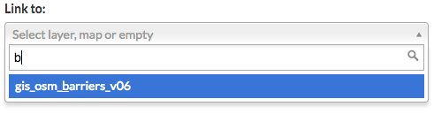

Working with Documents¶
Uploading documents into Exchange allows you to share them with other users. Documents can be actual files, or they can be links to documents on other websites. You can also associate a document to a layer or a map, which will display in the information page.
Uploading documents¶
- Select the Data link on the Exchange toolbar, and click Upload Document in the drop-down menu.

The following file types can be uploaded: .doc, .docx, .gif, .jpg, .jpeg, .ods, .odt, .pdf, .png, .ppt, .pptx, .rar, .sid, .tif, .tiff, .txt, .xls, .xlsx, .xml, .zip, .gz, .qml
Important
Your Site Administrators may limit specific file types.
- Add a title to the document as you would like it to appear in Exchange. It could be the same as the file name, but it doesn’t have to be.
- Select the Choose File button, and browse to the file to be uploaded.
OR: Enter the URL for an existing document.

To link your document to an existing map or layer, type the name of the map or layer in the Link to section, and select it from the list.

The social design of Exchange allows users to coordinate on projects by sharing access to the same data; however, there may be instances when you want to limit who has access to your documents. In Exchange, you can establish permissions for who can view, edit, and manage documents. Permissions can also be set for editing metadata.
- On the right side of the page, under the Who can view it section, add the name(s) of registered users or groups. This will ensure anonymous view access is disabled, and only those registered users specified are able to see your documents.
Select the checkbox next to Anyone to leave viewing available to all users.
- In the same area, under Who can download it?, add the users or groups who have permission to download the document.
- Set permissions accordingly for who is able to change metadata and manage the document.

- Click the Upload button.
Enter the document’s metadata on the next page. It’s recommended that you add an abstract at a minimum. Metadata helps other users know more about what you are uploading, and why.
- Fill out as much of the metadata as you can, or as needed, to include selecting a category.
Note: In order for others to be able to search for and view your document, you MUST select the Is Published checkbox. It is also necessary to select a category. This is a mandatory field.

- When you have finished entering metadata, click the Update button at the bottom of the page. You will be returned to the document’s information page.
The document will now be listed as an available result under the Explore Documents page.
Browsing documents¶
Finding documents that other Exchange users have added is quick and easy. As long as you have the proper permissions, you are able to view, download and edit any document you see in Exchange.
- Select the Data link on the Exchange toolbar, and click Documents in the drop-down menu.
As you learned in the Discovering Content section, you can filter the document results to find the type of documents you need.
- Click on the title of the document you want to view. This will open the document’s information page.

From here, you can view or download the metadata, edit, change permissions or download the document. You will also be able to view or add ratings and comments to the document.

- Click the Ratings tab, and select a star rating for the document. The more stars, the better the rating.

- Select the Comments tab to provide any feedback regarding the document. Click the Add Comment button, and type your comments in the text box. Click the Submit Comment button when you are finished.